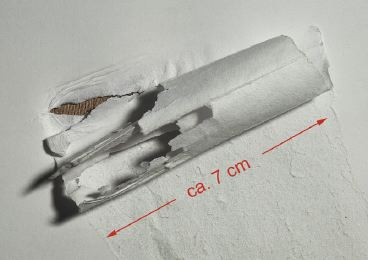
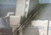
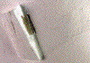
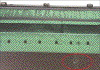
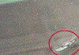

AUFSCHÄLER IM BOGENOFFSET
|
Bei Aufschäler im Bogenoffset handelt es
sich - meistens beim Bedrucken von Kartonsorten -
um eine Schicht- bzw. Lagentrennung des
Bedruckstoffes (Abb. 1). Durch
Bewegungsvorgänge können sich die
abgetrennten Lagen im Stapel aufrollen; es
resultiert an dieser Stelle eine bis zu 15-fache
partielle Verdickung des Bedruckstoffes. Beim
Durchlauf durch die Druckmaschine führt dies
zu Beschädigungen der Drucktücher, im
Extremfall auch zu Beschädigungen des Druck-
oder des Gegendruckzylinders.
Im Zusammenhang mit dem Begriff Aufschäler
können auch die Begriffe Aufroller oder
Knautscher genannt werden.
|

|
Abb. 1: Vergrößerte Aufnahme eines
Aufschälers.
|
|
|
|
Mögliche Ursachen:
|
|
|
|
Abb. 2: Aufschäler an der Schneidkante.
|
|
|
|

|
|
Abb. 3: Fehlstelle im Druck.
|
|
|
|

|
|
Abb. 4: Aufschäler am Verursacherbogen.
|
|
|
|
|
|
Abb. 5: Druckbogen mit Aufschäler nach dem
Maschinendurchlauf.
|
|
|
|
|
|
Abb. 6: Fehlstelle im Druck aufgrund des durch
Aufschäler beschädigten Drucktuchs.
|
|
|
|

|
|
Abb. 7: Deformierte Druckstelle auf dem
Gummituch.
|
|
|
|

|
|
Abb. 8: Vergrößerte Darstellung der
deformierten Druckstelle auf dem Gummituch.
|
|
|
|

|
|
|
|
|
|
|
Häufig müssen in einer Druckerei die angelieferten
Bogen auf ein kleineres Format geschnitten werden. Beim
Einschieben des zu schneidenden Stapels in den Planschneider
kann dabei der unterste Bogen an der Kante angestoßen
werden oder an einer nicht korrekt platzierten
Schneideleiste hängen bleiben. Dadurch kann eine
Lagentrennung und in der Folge das Aufrollen der
beschädigten Stelle auftreten (Abb. 2).
Beim Aufsetzen der Bogen in die Druckmaschine können
insbesondere beim Handling dicker Lagen durch gegenseitiges
Berühren der Schnittkanten die Vorder- oder
Rückseite beschädigt werden. Es kommt zur
partiellen Lagentrennung an der Kante und durch den
Schiebevorgang der Lage auf den Stapel zum Aufrollen der
beschädigten Stelle.
Durch Einschieben von Keilen für den
Höhenausgleich des Stapels oder durch Einschieben des
Schwertfühlers eines Feuchtigkeitsmessgerätes am
Anlagestapel können die Kartonkanten partiell
beschädigt werden und Aufroller entstehen.
In der Ausrüstung der Papierherstellung werden beim
Formatschnitt die Papierrollen abgerollt. Es kann dabei
vorkommen, dass die Lagen partiell miteinander verklebt sind
und durch den Abrollvorgang kommt es dann bei der
Lagentrennung zum Aufreißen der Oberfläche und zu
Aufrollern.
Grundsätzlich vergrößert eine zu geringe
Gefügefestigkeit des Bedruckstoffes die Gefahr der
Aufschäler. Für die Gefügefestigkeit oder
auch die sog. Spaltfestigkeit gibt es aus früheren
Untersuchungen der FOGRA einen empfohlenen Mindestwert
für Umschlagmaterialien von 100 N. (Prüfung nach
DIN 54516)
|
Mögliche Abhilfen:
|
|
Es kann nur empfohlen werden, beim Anlegen von zu
schneidenden Lagen in die Schneidemaschine, beim Aufsetzen
der Lagen am Anlagestapel oder beim Einstecken von
Schwertfühlern oder Keilen in den Stapel mit
erhöhter Vorsicht zu arbeiten, um Beschädigungen
zu vermeiden.
In der Schneidemaschine muss darauf geachtet werden, dass
die Schneidekante nicht hervorsteht. Außerdem muss
unbedingt mit Luftzufuhr am Schneidetisch gearbeitet werden,
um ein besseres Gleiten des Stapels zu
gewährleisten.
|
Beispiel(e):
|
|
Beschädigung der Drucktücher durch
Aufschäler - Ursache unbekannt:
Ein 350 g/m2 einseitig leinenstrukturierter
Karton im Format 70 cm x 100 cm Breitbahn wurde in einer
Druckerei auf das Format 50 cm x 70 cm geschnitten.
Während des Drucks wurde in einer 4-farbigen Abbildung
ein ca. 80 mm langer, diagonal verlaufender Streifen mit
unzureichender Druckwiedergabe sichtbar (Abb. 3). In der
Position des Streifens war eine dauerhafte Beschädigung
aller 4 Drucktücher zu erkennen. Nach der Art der
Beschädigungen zu schließen, konnte es sich nur
um einen Aufschäler im Karton handeln. Der
Ursprungsbogen konnte nach Durchsicht des Stapels ausfindig
gemacht werden. Auf der Rückseite dieses Bogens befand
sich der Aufschäler, der eine Gesamtdicke von 3 mm
erreichte. Bei näherer Betrachtung zeigte sich, dass
von der Greiferkante ausgehend der Karton sich auf einer
Anfangsbreite von 50 mm spaltete und dann auf eine
Gesamtbreite von 80 mm kissenförmig aufrollte
(Abb.4).
Die Überprüfung der Spaltfestigkeit an
unbedruckten Mustern ergab einen Wert von 180 N; die
Gefügefestigkeit wurde demnach als ausreichend hoch
eingestuft.
Letztendlich war es aber nicht mehr nachvollziehbar, bei
welchem Schritt der Aufroller entstanden ist. Zwar begann
der Aufschäler an der Greiferkante und verlief nach
hinten, was auf einen Ursprung in der Druckerei
schließen lässt, andererseits war der Beginn des
Aufrollers an der Kante bereits relativ breit und hätte
vor dem Formatschnitt somit schon bei der Papierherstellung
aufgetreten sein können. Der Gesamtschaden wurde von
der Druckerei und vom Kartonhersteller geteilt.
Aufschäler wegen nicht korrekt platzierter
Schneideleiste:
Die vom Papierlieferanten gelieferten Bogen für den
Druck eines Buchumschlages mussten in der Druckerei nochmals
beschnitten werden. Dabei kam es - wie sich im Nachhinein
herausstellte - aufgrund einer nicht korrekt platzierten
Schneideleiste immer am untenliegenden Bogen an der linken
Bogenseite zum Anstoßen der Bogenkanten. Dies
führte zu Beschädigungen und zu kleinen Einrissen
an diesen Stellen. Beim Abstapeln der Bogen haben sich dann
Aufroller im Anlagestapel gebildet. Abb. 5 zeigt einen Bogen
mit Aufroller nach dem Maschinendurchlauf. Dieser Bogen war
letztendlich auch der Verursacherbogen für eine
dauerhafte Beschädigung der Drucktücher. Abb. 6
zeigt, dass die Drucktücher an der Stelle des
Aufrollers nicht mehr druckten.
Die Drucktücher zeigten eine dauerhafte
Beschädigung und mussten deshalb gewechselt werden
(Abb. 7 und Abb. 8).
|
Allgemeine Hinweise:
|
|
Für den Reklamationsfall:
Verursacherbogen sicherstellen. Anhand der Position und der
Form des Aufschälers können oftmals
Rückschlüsse gezogen werden, ob der
Aufschäler in der Papierherstellung oder beim Schneiden
bzw. beim Aufsetzen aufgetreten ist. Befindet sich der
Aufschäler an der Greiferkante und verläuft nach
hinten, liegt die Vermutung nahe, dass der Aufschäler
beim Aufsetzen in den Anlagestapel oder beim Zwischenschnitt
in der Schneidemaschine entstanden ist. Befindet sich der
Aufschäler an einer Seitenkante, könnte er beim
Zwischenschnitt verursacht worden sein. Befindet sich der
Aufschäler in der Bogenmitte, so ist hier ein Hinweis
für die Papierherstellung als Ursprung. Die Form des
Aufschälers ist ebenfalls entscheidend. Beginnt der
Aufschäler mit einer schmalen Stelle, die sich nach
hinten verbreitert, liegt die Vermutung nahe, dass er in der
Druckerei oder am Schneidetisch entstanden ist. Hat der
Aufschäler an einer Kante bereits eine gewisse Breite,
könnte der Aufschäler durchgeschnitten worden sein
und wäre praktisch schon vor dem Schneiden vorhanden
gewesen. Dieser Umstand würde für eine Ursache in
der Papierherstellung sprechen.
Unbedrucktes Auflagenpapier (bzw. -karton) und
Vergleichspapiere (-kartons) sicherstellen für
Spaltfestigkeitsprüfungen.
Ergänzende Literatur:
PANTEL, G.:
Diagnose: Aufschäler.
In: Druckwelt 5, Mai 1998 (S. 68)
GISI, B.:
Bogenverletzung und die Folgen.
In: Druck & Medien Magazin, Jg. 1, Nr. 3/2000 (S. 50 -
51)
|
|
|
|
|
|
|
Kontakt:
pantel@fogra.org
|
Auf-pan-200111
|